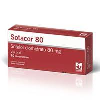
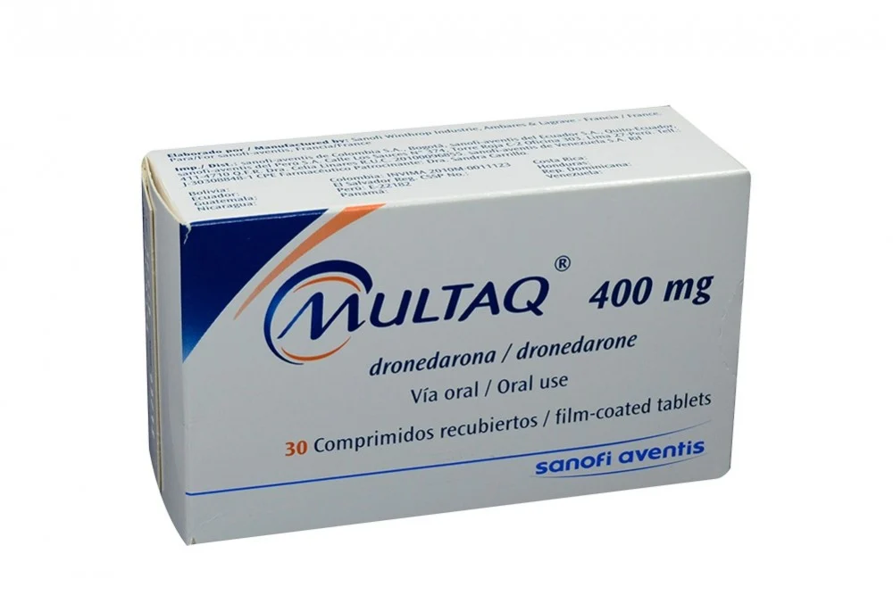

Inhiben los canales de potasio (principalmente IKr), prolongando la fase 3 del potencial de acción cardíaco. Esto aumenta la duración del potencial de acción y el período refractario efectivo, reduciendo la posibilidad de reentrada y arritmias.
Tratamiento y prevención de arritmias supraventriculares (fibrilación auricular, flutter auricular) y ventriculares (taquicardia ventricular, fibrilación ventricular).
Síndrome del QT largo congénito, bradicardia significativa, bloqueo AV de segundo o tercer grado sin marcapasos, insuficiencia cardíaca descompensada, hipopotasemia o hipomagnesemia no corregidas.
Prolongación del intervalo QT, torsades de pointes, bradicardia, hipotensión, efectos gastrointestinales (náuseas, vómitos), mareos, fatiga.
Medicamentos que prolongan el QT (antipsicóticos, macrólidos, fluoroquinolonas), inhibidores o inductores del CYP3A4 (afectan niveles plasmáticos de algunos antiarrítmicos), digoxina, warfarina.